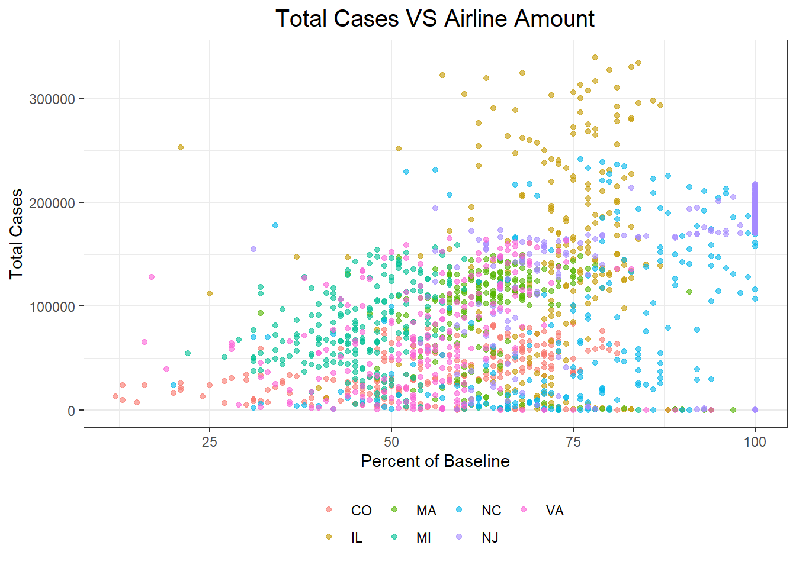

After determining that the outbreak of COVID-19 took place in mid-March and is still not under full control, we can start analyzing data within this time frame.
Firstly, we mapped two bubble maps to see the association between the flight amount since the middle of March and the number of total COVID-19 cases by states. Percent of baseline is the amount of flight compared to the baseline flight amount, which makes the data easier to understand and compare.
#import data for covid_impact_on_airport_traffic
#Main Problem: join data, have date and state match for both data
# Transportation and Covid have different way to representing date(2020-01-01 in transportation date and 01/01/2020 in Covid data)
transportation =
read_csv("./data/covid_impact_on_airport_traffic.csv" ) %>%
janitor::clean_names() %>%
filter(country != "Australia" & country != "Chile" & country != "Canada") %>% #only leave United States data
separate(date, c("year","month","day"), sep = "([-])") %>% # I re-arrange the date information so that it matched the date format in Covid data
mutate(date = paste(month,day,year,sep = "/")) %>% # I re-arrange the date information so that it matched the date format in Covid data
relocate(date) %>%
select(-year,-month,-day,-version,-aggregation_method,-state,-country) %>% #delete variable that is not in our interest
rename(state = iso_3166_2) %>% #rename state variable so that we can combine two data
mutate(state=gsub("US-","",state)) # reformat state variable, delete prefix of US-
Covid =
read_csv("./data/United_States_COVID-19_Cases_and_Deaths_by_State_over_Time.csv" ) %>%
janitor::clean_names() %>%
filter(consent_cases == "Agree" | consent_deaths == "Agree")%>% #need to decided whether this step is necessary
select("submission_date":"pnew_death") %>% #select variable of interest, need to look further into which variable we are interested in and way
rename(date = submission_date) # rename date variable so that we can match data accordingly
Covid_transport_data =
left_join(transportation, Covid, by = c("date")) %>% #left join two data, by date
filter(state.y == state.x)
#filter the data so that we only leave the data that have matching date and statetransport_state =
Covid_transport_data %>%
mutate(centroid=gsub("POINT\\D","",centroid)) %>%
separate(centroid, into = c("long", "lat"), sep = 17) %>%
mutate(across(where(is.character), str_trim)) %>%
group_by (airport_name, long, lat, state.x) %>%
summarize(
mean_percent_base = mean(percent_of_baseline)
) %>%
mutate(long = round(as.double(long),digits = 0),
lat = round(as.double(str_remove(lat,"\\)"))),digits = 2,
mean_percent_base = round(mean_percent_base, digits = 2))
mybins <- seq(40, 90, by=10)
mypalette <- colorBin( palette="magma", domain=transport_state$mean_percent_base, bins=mybins)
mytext = paste(
"Longitude: ", transport_state$long,
"Latitude: ", transport_state$lat,
"Percent of baseline: ", transport_state$mean_percent_base) %>%
lapply(htmltools::HTML)
m <- leaflet(transport_state) %>%
addTiles() %>%
addProviderTiles("CartoDB.Positron") %>%
addCircleMarkers(~long, ~lat,
fillColor = ~mypalette(mean_percent_base),
fillOpacity = 0.7,
color="white",
radius = ~ mean_percent_base/2,
stroke = FALSE,
label = mytext,
labelOptions = labelOptions( style = list("font-weight" = "normal", padding = "3px 8px"), textsize = "13px", direction = "auto")
) %>%
addLegend( pal= mypalette, values=~mean_percent_base, opacity=1, title = "Percent of baseline", position = "bottomright" )
mThe air transportation bubble map shows a comparison between the average flight amount from Mar.16th to Oct.16th, 2020, and total covid-19 cases during the same period among the seven major airports in the US States:
• Boston Logan International
• Charlotte Douglas International
• Chicago O’Hare International
• Denver International
• Detroit Metropolitan Wayne County
• Newark Liberty International
•Washington Dulles International
The larger the bubble is, the greater the percent of baseline and the smaller difference from the baseline will be. For instance, we can see that the proportion of Newark Liberty International Airport (NJ) is the greatest, while the proportion of Washington Dulles International (VA) is the smallest. This difference implies that COVID-19 has brought a much more severe impact to air transportation in New Jersey than in Virginia.
case_state =
Covid_transport_data %>%
mutate(centroid=gsub("POINT\\D","",centroid)) %>%
separate(centroid, into = c("long", "lat"), sep = 17) %>%
mutate(across(where(is.character), str_trim)) %>%
group_by (airport_name, long, lat, state.x) %>%
summarize(
total_cases = max(tot_cases)
) %>%
mutate(long = round(as.double(long),digits = 0),
lat = round(as.double(str_remove(lat,"\\)"))),digits = 2
)
mybins <- seq(80000, 380000, by=50000)
mypalette <- colorBin( palette="magma", domain=case_state$total_cases, bins=mybins)
mytext = paste(
"Longitude: ", case_state$long,
"Latitude: ", case_state$lat,
"Total Cases: ", case_state$total_cases) %>%
lapply(htmltools::HTML)
n <- leaflet(case_state) %>%
addTiles() %>%
addProviderTiles("CartoDB.Positron") %>%
addCircleMarkers(~long, ~lat,
fillColor = ~mypalette(total_cases),
fillOpacity = 0.7,
color="white",
radius = ~ sqrt(total_cases/8000)*7,
stroke = FALSE,
label = mytext,
labelOptions = labelOptions( style = list("font-weight" = "normal", padding = "3px 8px"), textsize = "13px", direction = "auto")
) %>%
addLegend( pal= mypalette, values=~total_cases, opacity=1, title = "Total cases", position = "bottomright" )
nThe COVID bubble map provides information on the number of total COVID-19 cases from Mar.16th to Oct.16th by states. The larger the bubble size is, the larger the number of the total COVID-19 cases is. As seen in this plot, Illinois, North Carolina, and New Jersey have a relatively greater number of total cases, while Colorado has the smallest number of total cases.
By comparing the two bubble maps, we can see an association between the flights and the number of total COVID-19 cases from Mar.16th to Oct.16th. For the states, such as New Jersey, the percent of baseline for the flights is relatively smaller with more total cases, suggesting that as the number of total cases increases, the impact of COVID-19 brought to the air transportation will also be increased.
Covid_transport_data %>%
ggplot(aes(x = percent_of_baseline, y = tot_cases, color = state.x)) +
geom_point(alpha = 0.6) +
labs(
title = "Total Cases VS Airline Amount",
x = "Percent of Baseline",
y = "Total Cases"
)
regression_tot = lm(tot_cases ~ percent_of_baseline, Covid_transport_data)
knitr::kable(tidy(regression_tot))| term | estimate | std.error | statistic | p.value |
|---|---|---|---|---|
| (Intercept) | -25176.148 | 6086.44823 | -4.136427 | 0.0000372 |
| percent_of_baseline | 1845.606 | 90.24531 | 20.450995 | 0.0000000 |
There is a positive association in total cases with respect to percent of baseline, the airline amount for all states, so we do a regression test for each state to see if this positive relation can be applied to every state.
regression_state = Covid_transport_data %>%
nest(data = -state.x) %>%
mutate(
models = map(.x = data, ~lm(tot_cases ~ percent_of_baseline , data = .x)),
results = map(models, broom::tidy)
) %>%
select(-data, -models) %>%
unnest(results) %>%
filter(str_detect(term, "percent_of_baseline")) %>%
knitr::kable()
regression_state| state.x | term | estimate | std.error | statistic | p.value |
|---|---|---|---|---|---|
| CO | percent_of_baseline | 651.7285 | 88.42911 | 7.370067 | 0.0000000 |
| IL | percent_of_baseline | 1348.0381 | 635.67225 | 2.120650 | 0.0351133 |
| MA | percent_of_baseline | -588.8396 | 342.38306 | -1.719827 | 0.0869233 |
| MI | percent_of_baseline | 102.4457 | 326.82936 | 0.313453 | 0.7542447 |
| NC | percent_of_baseline | 2137.6537 | 282.22816 | 7.574204 | 0.0000000 |
| NJ | percent_of_baseline | 2102.5698 | 198.23448 | 10.606479 | 0.0000000 |
| VA | percent_of_baseline | 1272.0661 | 279.14163 | 4.557063 | 0.0000088 |
We can see from the regression table that four states have statistically significant p-values. They demonstrate a tendency that as airlines start to increase, the total cases increase accordingly with a relatively steep slope. In other words, covid-19 cases are positively associated with airline amount in Colorado, North Carolina, New Jersey, Virginia. For Illinois and Michigan, p-values are not statistically strong, but the estimated slope is positive. However, Massachusetts has a negative slope with large p-value, which indicates that there might be no association in airline amount and covid-19 cases or there might be stronger factors associated with covid-19 cases.